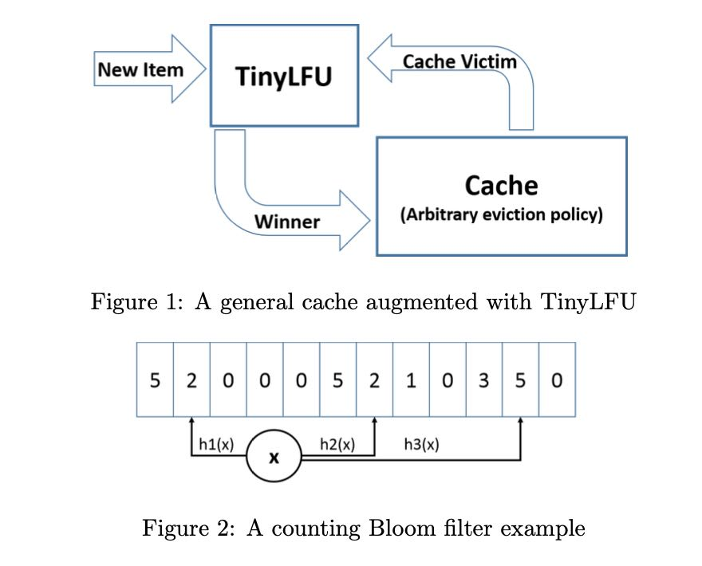
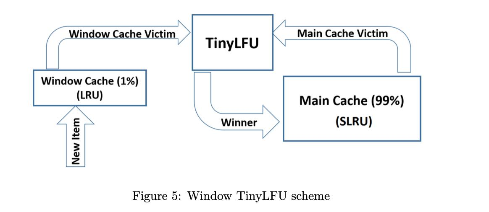

TinyLFU: A Highly Efficient Cache Admission Policy
Table of Contents
1. 大致思路
注意这个东西是Cache Admission Policy, 而不是Evicition Policy. 我看到最后实际上Evicition Policy使用的还是LRU/SLRU(https://mhy12345.xyz/technology/segmented-lru/). 里面作者Ben-Manes也是Caffeine (https://github.com/ben-manes/caffeine) 的Committer. 里面理论分析和实验数据都比较多，所以我也就大概看个实现。
2. TinyFLU
TinyLFU的整体结构是这样的：
- New Item经过TinyLFU，估算这个item的cache hit rate/count.
- 如果Cache足够大，那么应该可以直接进入，
- 如果Cache不够大的话，那么选择Cache Victim, 对于和Item的cache hit rate/count
- 如果Cache Victim更好，那么就放弃Item；如果Item更好，那么就删除Cache Victim.

首先要进行cache hit counter计数，并且这个计数必须是space-efficient的，因为可能cache size会很大。另外就是要考虑freshness, 如果cache hit counter是一直增加的话，那么历史上命中率很高的item，即便之后没有任何查询，也需要花费很长时间evicted.
第一个问题的解决办法是使用Counting Bloom Filter(CBF)来进行计数（如上图所示），更具体来说使用Minimal Increment CBF. a) Estimate使用几个hash bucket里面最小的count b) Add也针对最小的hash bucket对应的count进行累加。但是因为bits限制，所以其实是有个上限的，可能使用1个字节应该就足够了。
A Minimal Increment CBF is an augmented counting Bloom filter that supports two methods: Add and Estimate. The Estimate method is performed by calculating k different hash values for the key. Each hash value is treated as an index, and the counter at that index is read. The minimal value of these counters is the returned value. The Add method also calculates k different hash values for the key. However, it reads all k counters and only increments the minimal counters. For example, suppose we use 3 hash functions as illustrated in Figure 2. Upon item arrival, 3 counters are read. Assuming we read {2,2,5}, the Add operation increments only the two left counters from 2 to 3 while the third counter remains untouched. Intuitively, this Add operation prevents unnecessary increments to large counters and yields a better estimation for high frequency items, as their counters are less likely to be incremented by the majority of low frequency items. It does not support decrements but is shown to empirically reduce the error for high frequency counts [17].
第二个问题的解决办法就比较简单，但是思想很好：
- 选择一个sample size/W, 以及记录更新次数C.
- 当C=W的时候，可以认为是一个freshness周期，对里面每个bucket除2（文章叫做reset)
- 这样cache hit counter可以指数衰减，历史上访问次数很高但是近期不访问的cache item，可以很快evicted出去。
Instead, we propose a novel method for keeping the sketch fresh, the reset method described below. The reset operation is simple. Every time we add an item to the approximation sketch, we increment a counter. Once this counter reaches the sample size (W), we divide it and all other counters in the approximation sketch by 2. This division has two interesting merits. First, it does not require much extra space as its only added memory cost is a single counter of Log(W) bits. Second, this method increases the accuracy of high frequency items as we show both analytically and experimentally. Since the accuracy of an approximation sketch can always be increased by using more space, we show that the reset method in fact reduces the total space cost since we get a significantly more accurate sketch for the same space.
考虑到大部分cache item只访问一次，为了继续优化space, 增加来了一个Doorkeeper机制：
- DoorKeeper是一个bloom filter. 如果cache item第一次进来，那么不会立刻进入TinyLFU，支持在DoorKeeper里面，再次进来才会加入TinyLFU.
- 在计算cache hit count的时候，需要在原来的基础上+1
- reset/fresh阶段，也需要清空DoorKeeper.
3. Window TinyLFU
作者发现TInyLRU对于某些workload效果不是很好，这些workload表示是"sparse bursts" to the same object. 我不是太理解其中的含义，我猜测意思是TinyLFU需要积累一定的cache hit counter才能进入Main Cache, 而这个反应速度其实对于sparse burst是不够的。所以作者在上面做了一下改进，在整个流程之间增加一个Window Cache：
- Window Cache(1% cache size) 无论如何都会接受，并且使用LRU进行淘汰Cache Victim.
- 对于Window Cache Victim进入TinyLFU管理流程, 而LRU里面依然可以保存某些LRU友好的对象。
- Main Cache(99% cache size)里面使用SLRU(A1 20%, A2 80%)来管理淘汰策略

TinyLFU was integrated into the Caffeine Java high performance caching library [43] that is available in open source. During extensive benchmarking performed with this library, we have discovered that while TinyLFU performs well on traces originating from Internet services and artificial Zipf-like traces, there are a few workloads in which TinyLFU did not perform so well compared to state of the art caching policies. This occurred mainly with traces that include “sparse bursts” to the same object, as is common in storage servers. That is, in these cases, items belonging to new bursts do not manage to build enough frequency to remain in the cache before being evicted, causing repeated misses.
This problem was remedied in our Caffeine integration by devising a policy called Window Tiny LFU (W-TinyLFU), which consists of two cache areas. The main cache employs the SLRU eviction policy and TinyLFU admission policy while the window cache employs an LRU eviction policy without any admission policy. The A1 and A2 regions of the SLRU policy in the main cache are statically divided so that 80% of the space is allocated to hot items (A2) and the victim is picked from the 20% non hot items (A1).
Any arriving item is always admitted to the window cache and the victim of the window cache is given a chance to be admitted to the main cache. If it is admitted, then the victim of W-TinyLFU is the main cache’s victim and otherwise it is the window’s cache victim. The W-TinyLFU scheme is illustrated in Figure 5.
In the current release of Caffeine (2.0), the size of the window cache is 1% of the total cache size and that of the main cache is 99%. The motivation behind W-TinyLFU is to have the scheme behave like TinyLFU for LFU workloads while still be able to exploit LRU patterns such as bursts. Because 99% of the cache is allocated to the main cache (with TinyLFU), the performance impact on LFU workloads is negligible. On the other hand, some workloads allow for exploitation of LRU friendly patterns. In these workloads W-TinyLFU is better than TinyLFU. As we report in Section 5 below, for Caffeine’s needs, W-TinyLFU is a top alternative for a wider variety of workload and thus the added complexity is justified.